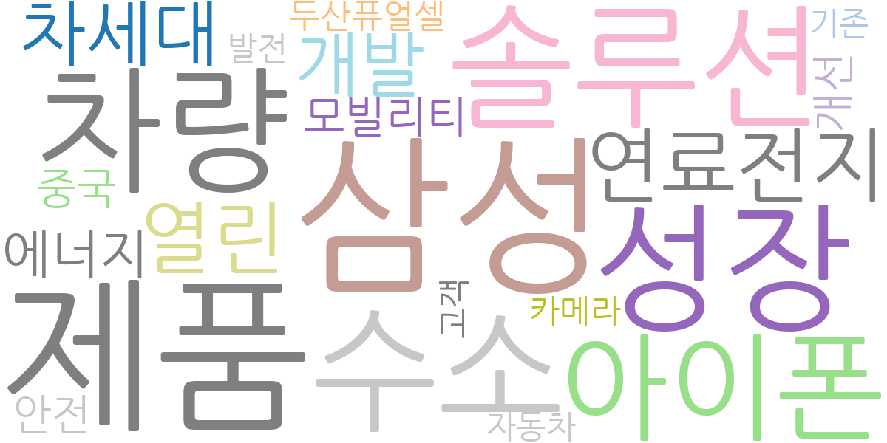
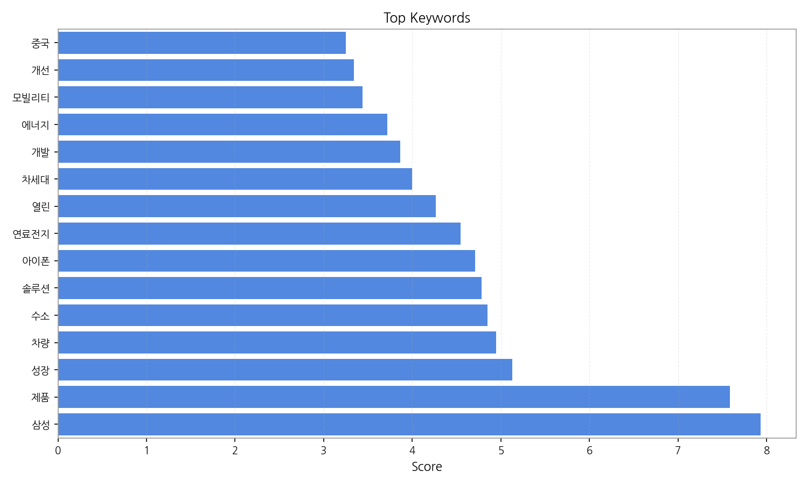
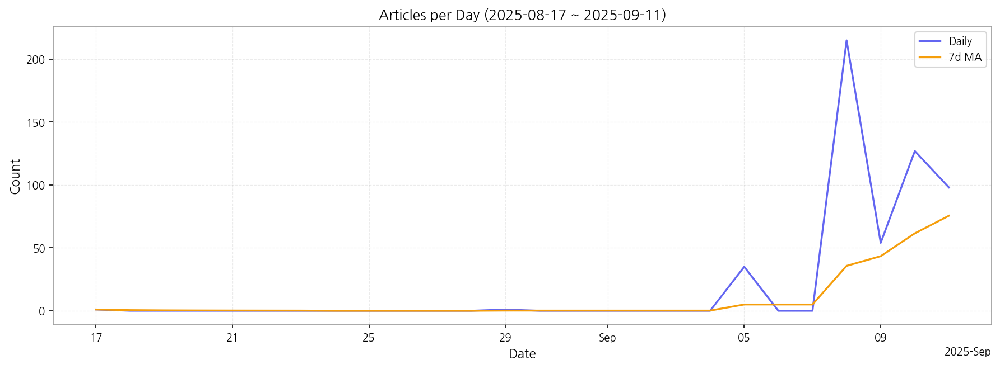

(로컬 요약) 최근 7일 흐름을 기준으로 간단 요약합니다. 마지막 일자 증감은 -29건입니다. 상위 토픽은 산업·제품·정책 축으로 분포하며, 실행 액션은 1) 상위 토픽 사례 수집, 2) 급증 키워드 원인 파악, 3) 파트너십/조달 여부 검토가 적절합니다.

| Rank | Keyword | Score |
|---|---|---|
| 1 | 삼성 | 7.933 |
| 2 | 제품 | 7.588 |
| 3 | 성장 | 5.130 |
| 4 | 차량 | 4.943 |
| 5 | 수소 | 4.846 |
| 6 | 솔루션 | 4.781 |
| 7 | 아이폰 | 4.710 |
| 8 | 연료전지 | 4.547 |
| 9 | 열린 | 4.268 |
| 10 | 차세대 | 3.998 |
| 11 | 개발 | 3.863 |
| 12 | 에너지 | 3.720 |
| 13 | 모빌리티 | 3.435 |
| 14 | 개선 | 3.341 |
| 15 | 중국 | 3.249 |



(로컬 요약) 최근 7일 흐름을 기준으로 간단 요약합니다. 마지막 일자 증감은 -29건입니다. 상위 토픽은 산업·제품·정책 축으로 분포하며, 실행 액션은 1) 상위 토픽 사례 수집, 2) 급증 키워드 원인 파악, 3) 파트너십/조달 여부 검토가 적절합니다.
| Idea | Target | Value Prop | Score |
|---|---|---|---|
| 디스플레이 부품 통합 조달 플랫폼 (KR) | 한국 내 디스플레이 제조사(대기업 및 중견기업), 디스플레이 부품 중소기업 | 단일 플랫폼을 통해 다양한 부품을 통합 조달하여 비용 절감 및 효율 증대를 제공합니다. 중소 부품업체에게는 대기업과의 거래 기회를 제공합니다. 차별화 포인트는 AI 기반 수요 예측 및 재고 관리 기능을 통해 공급망 안정성을 극대화하는 것입니다. | 4.50 |
| 차량용 디스플레이 품질 관리 AI 솔루션 (JP) | 일본 내 자동차 부품 제조사, 차량용 디스플레이 제조사 | AI 기반 이미지 분석 기술을 활용하여 차량용 디스플레이의 불량을 자동으로 검출하고 품질 관리를 효율화합니다. 차별화 포인트는 고해상도 이미지 분석을 통해 미세한 결함까지 정확하게 검출하는 것입니다. | 4.20 |
| 모빌리티-디스플레이 연동 데이터 분석 서비스 (KR) | 한국 내 자동차 제조사, 자동차 부품 제조사 | 차량 내 디스플레이 사용 데이터를 분석하여 고객 행동 패턴을 파악하고, 고객 경험 개선 및 신규 서비스 개발에 필요한 인사이트를 제공합니다. 차별화 포인트는 사용자 맞춤형 대시보드를 통해 직관적인 데이터 시각화를 제공하는 것입니다. | 4.00 |
| 스마트 사이니지 콘텐츠 제작 및 배포 플랫폼 (EU) | 유럽 내 사이니지 운영업체, 광고 대행사, 소매업체 | 직관적인 인터페이스를 통해 누구나 쉽게 사이니지 콘텐츠를 제작하고 배포할 수 있도록 지원합니다. 다양한 콘텐츠 형식 지원 및 실시간 모니터링 기능을 제공합니다. | 3.80 |
| 수소 연료전지 발전 시스템 최적화 파트너십 (JP) | 일본 내 수소 연료전지 제조사, 에너지 기업 | 수소 연료전지 발전 시스템의 운영 데이터를 분석하여 최적의 운영 전략을 수립하고, 기술적 지원을 제공합니다. 차별화 포인트는 예측 정비 시스템을 통해 시스템 고장을 예방하고 유지보수 비용을 절감하는 것입니다. | 3.50 |